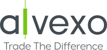

Le guide comparatif des meilleurs brokers du marché
Quel broker choisir ? Sur quel marché financier investir ? Quelle stratégie adopter pour réussir ? Un guide complet pour mieux comprendre le trading en ligne et rester au courant des dernières tendances des marchés financiers
.svg)
Meilleurs brokers à Paris
-

Avatrade est un broker CFD présent sur le marché depuis 2006. Spécialisé dans le trading CFD et trading Forex, il a su gagner le cœur des traders et s’inscrit parmi les meilleurs en la matière
-

Alvexo s’impose comme le meilleur broker du trading en ligne depuis son lancement en 2014. Sa capacité à s’adapter à tous les profils lui permet aujourd’hui d’être un incontournable pour les traders débutants comme les traders professionnels
-
.svg)
Libertex est arrivé sur le marché en 1997 et compte aujourd’hui l’une des plus grandes communautés de clients. Son expérience considérable lui permet de proposer des plateformes de trading de qualité, adaptées à tous les niveaux
Suggestion d’articles
-

Apprendre le trading en ligne gratuitement
Apprendre à trader proprement, est l’objectif de tous les débutants, qui commencent à interagir avec les différentes plateformes de trading. Seulement, atteindre cet objectif peut se révéler être une tâche bien plus difficile…
-
.png)
MetaTrader 5 : avis et guide complet
Apprendre à trader proprement, est l’objectif de tous les débutants, qui commencent à interagir avec les différentes plateformes de trading. Seulement, atteindre cet objectif peut se révéler être une tâche bien plus difficile…
-
.png)
Quels sont les risques du trading?
Apprendre à trader proprement, est l’objectif de tous les débutants, qui commencent à interagir avec les différentes plateformes de trading. Seulement, atteindre cet objectif peut se révéler être une tâche bien plus difficile…
-

Vous cherchez le courtier parfait?
Il est indispensable de connaître vos objectifs de gains pour tomber sur le courtier parfait. Trouvez en quelques clics le broker qui vous correspondra le mieux selon vos objectifs d’investissement et de votre niveau en trading en ligne.
-

En quête de plus de connaissances ?
Débutant dans le trading en ligne ou en quête de plus de performances ? Découvrez nos ressources gratuites pour obtenir tous les outils nécessaires à vos prochaines sessions de trading. Astuces, conseils et outils à disposition gratuitement.
-

Comparer a les meilleurs brokers
Rien de plus efficace que de comparer les brokers qui vous intéressent. Vous pouvez les comparer au travers différentes catégories afin de savoir lequel répond vraiment à vos objectifs.
Nos ressources gratuites
-

La barre des 23 000 euros a été dépassée pour le Bitcoin et Ethereum observe une augmentation de 5,39 %
-
.png)
La barre des 23 000 euros a été dépassée pour le Bitcoin et Ethereum observe une augmentation de 5,39 %
-
.png)
La barre des 23 000 euros a été dépassée pour le Bitcoin et Ethereum observe une augmentation de 5,39 %
01. Qu’est-ce qu’un site de trading ?
02. Est-ce que l’utilisation d’un robot de trading est efficace ?
Tout dépend de votre objectif. Le robot de trading est avant tout un logiciel particulièrement intelligent ayant pour finalité d’analyser les marchés financiers et d’effectuer des prises de position selon ce que le trader lui aura demandé. Il est donc important de connaître exactement vos objectifs ainsi que votre profil investisseur pour pouvoir utiliser de la manière la plus optimale un robot de trading.
03. Peut-on faire du trading en ligne même en étant débutant ?
04. Quelle plateforme de trading privilégier ?
Qui sommes-nous ?
DigitalBusiness.fr est le site de référence qui regroupe tous
les avis comparatifs de broker en ligne. Entièrement géré et
rédigé par des experts du trading, ici vous ne trouverez que des
informations exclusives et des analyses particulièrement
poussées.
Notre objectif est de fournir un article complet, accessible et
entièrement impartial pour répondre à vos questions et de vous
permettre de trouver le broker qui vous correspond.
Notre site est donc l’endroit idéal pour retrouver le classement
du meilleur broker en ligne de l’année, des avis fournis sur
chaque site de trading disponible sur le marché et des conseils
pour vous faire progresser dans le trading en ligne.
.png)
Les questions fréquemment posées